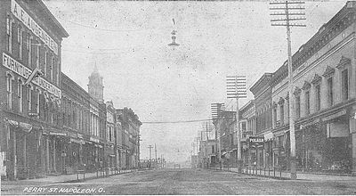
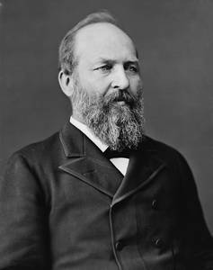

[[ Note du Traducteur : Thomas Stevens est le premier cycliste à avoir fait le tour du monde ; par la même occasion il est le premier cycliste à avoir traversé les Etats-Unis d'océan à océan ; les 4 premiers chapitres relatent sa traversée des Etats-Unis. ]]
Des Grandes Plaines Jusqu'à L'Atlantique
Après ce voyage de trois jours à travers le grand État de la Plaine [[ Ndt : The Prairie State (L'État de la Plaine) est un des surnoms de l'Illinois. Source : https://goo.gl/f33jBv ]] j'ai la tête bien émue de ces bontés et de ces flatteries ; mais la troisième nuit, comme pour donner une leçon à ma vanité, on me refuse sans ménagement un hébergement dans trois fermes différentes. Je suis surpris par l'obscurité, et décide que le meilleur parti à prendre est de me plonger dans un tas de foin ; mais les moustiques de la rivière Fox me mettent dehors en peu de temps, et me forcent à faire une balade dans la nuit lugubre jusqu'à Yorkville [[ Ndt : le village de Yorkville a été fondé en 1836 ; il compte environ 365 habitants lors du passage de Stevens ]]. A Yorkville, un robuste Allemand, en apprenant que je vais à Chicago en bicycle, déclare, « Comment ! Gicago avec ça ? Mais allons, mon gère ami, Gicago est plus de garante miles [ Ndt : 40 miles sont environ 64 kilomètres ] ; vous bouvez pas rouler jusqu'à Gicago avec ça ; » et le vieux bonhomme ouvre de grands yeux d'étonnement à la seule idée de rouler quarante miles « avec ça ». Je fais un effort pour ne pas lui parler de mon escapade de déjà 2.500 miles [[ Ndt : environ 4023 km ]] « avec ça, » de peur qu'une crise d'apoplexie emporte pour toujours son âme teutonne aux royaumes de la béatitude de la choucroute et du bonheur du Limburger [[ NdT : fromage créé au 19ème siècle dans le duché de Limburg (duché maintenant divisé entre la Belgique, l’Allemagne et la Hollande) ; ce fromage est connu pour sa forte odeur, se rapprochant de celle du Munster ]]. Le matin du 4 Juillet je roule à Chicago, où, m'étant convaincu que je mérite un repos de quelques jours, je reste jusqu'à la fin de la Convention démocrate le 13 [[ Ndt : 13 juillet 1884. À cette convention du Parti Démocrate, Grover Cleveland, gouverneur de l'État de New York, est élu candidat du Parti pour les élections présidentielles du 4 novembre 1884 où il sera élu président des États-Unis ]].
Grover Cleveland, 22e et 24e président des États-Unis
Source : WikipediaDomaine public
Quinze miles à bonne allure et trois d'une progression lente, dans le sable profond, m'amènent en Indiana, qui, pendant les trente-cinq premiers miles autour de la rive sud du lac Michigan n'est tout simplement et uniquement que du sable. Estimant qu'il est presque impossible de progresser sur les pistes des chariots, je roule lentement en bordure de l'eau, où le sable humide est plus ferme. Après vingt miles de ce régime je dois porter le bicycle sur l'épaule et escalader les immenses dunes de sable qui bordent le lac à cet endroit, et après avoir erré pendant une heure dans un désert ahurissant de marécages, de collines de sable, et de fourrés de pacaniers [[ Ndt : sorte de noyer des États-Unis ]], à la nuit j'arrive enfin à Miller. Cet endroit a de quoi vous provoquer un abattement à la limite de la frousse : rien que des marécages, du sable, des tortues aux yeux tristes et des moustiques impitoyables et implacables. À Chesterton [[ Ndt : fondée sous le nom de Calumet, elle prend le nom de Chesterton en 1852, lors de l'arrivée du chemin de fer ; elle compte environ 500 habitants lors du passage de Stevens ]] les routes s'améliorent, mais il y a encore suffisamment de sable pour amortir les chute tête-en-avant, que, malgré ma longue expérience sur la route, je continue de faire avec une fréquence indésirable. Aujourd'hui, je m'en prends une, et alors que je me remets et me félicite de ma bonne étoile pour être dans un endroit isolé où personne ne peut témoigner de ma déconfiture, un grossier et sarcastique « haw-haw » résonne comme un glas funèbre a mes oreilles, et un « Hoosier » dégingandé apparaît monté sur une petite mule couleur citrouille qui a l'air d'un véritable pygmée entre ses jambes arquées comme un cerceau. Il n'est que justice de mentionner que ce dernier incident ne s'est pas produit dans le « comté de Posey » [[ Ndt : sans doute ici un trait d'humour, le mot posey pouvant signifier « prétentieux », référence à l'attitude du Hoosier (habitant de l'Indiana, où se trouve le comté de Posey ; le dit comté de Posey se trouve à l'extrême sud-ouest de l'État de l'Indiana, en ce moment Stevens se trouve dans le comté de Porter ou de LaPorte au nord-ouest de l'Indiana) ]].
Miller autrefois
Chesterton vers 1907
Source : Northwest Indiana Geological Society
http://www.rootsweb.ancestry.com
À La Porte [[ Ndt : ville dans le comté du même nom ; exploré en 1670 par les explorateurs français et nommé ultérieurement La Porte par les français, le comté La Porte était un passage utilisé par les trappeurs entre forêts et plaines. Source http://www.cityoflaporte.com ]] les routes s'améliorent sur une certaine distance, mais encore une fois je suis surpris par la nuit, et je dors sous une gerbe de blé.
La Porte en 1904
Après avoir roulé plusieurs miles sur une route en construction, à travers des marais où poussent des myrtilles, le lendemain matin, j'atteins Crum´s Point [[ Ndt : il s'agit du hameau de Crumstown ; 100 habitants en 1900 ]] pour le petit déjeuner. Des membres survivants de quelque tribu indienne persistent encore ici et cueillent des myrtilles pour le marché, pendant que deux squaws dans le village achètent des fournitures pour leur camp dans les marais. « Quel est le nom de ces Indiens ? » demandé-je. « Une c'est Blinkie, et l'aut' c'est Seven-up » telle est la réponse, d'une voix qui implique une connaissance d'une telle profondeur du sujet que je m'abstiens de pousser plus loin mes investigations. De superbes routes de terre battue mènent de Crum's Point à South Bend, et de là passant par Mishawaka [[ Ndt : ville fondée en 1830 après la découverte de dépôts de fer des marais ( concrétions caractérisées par une haute teneur em minerai de fer) ; à la fin du 19ème siècle Mishawaka est connue comme la « capitale mondiale de la menthe poivrée » dont la pousse est favorisée par les terres riches en terreau noir de la région. La ville compte environ 2600 habitants lors du passage de Thomas Stevens ]], alternent avec des portions sableuses jusqu'à Goshen, ville réputée – par les Goshenites – pour être la plus belle de l'Indiana ; mais il semble y avoir beaucoup de chauvinisme local dans le grand État hoosier [[ Ndt : l'Indiana ]], et je m'avancerais à croire qu'il y a des dizaines de « la plus jolie ville de l'Indiana ». Néanmoins, Goshen est indéniablement un très bel endroit, avec des rues inhabituellement larges, bien ombragées ; centre d'une magnifique région agricole, elle est romantiquement située sur les rives de la belle rivière Elkhart. A Wawaka je rencontre un corpulent cycliste de 135 kilos, qui, ayant peur de faire confiance en une machine ordinaire, vu ses proportions jumboesques [[ Ndt : Jumbo était un très grand éléphant d'Afrique, amené au jardin des plantes à Paris, puis au zoo de Londres et vendu au cirque Barnum aux USA en 1882 où il devint la coqueluche du public ; sa taille et sa renommé ont fait du nom Jumbo une sorte de qualificatif pour évoquer une taille peu commune. Source : Wikipedia https://tinyurl.com/jumbo-eleph ]], a fait fabriquer selon ses exigences un bone-shaker extra-renforcé [[ Ndt : il s'agit en fait du vélocipède, appelé boneshaker – on peut traduire par secoueur d'os, ou briseur d'os – aux État-Unis ; en effet le vélocipède, premier deux roues à pédales, inventé en 1861, en fer forgé et à roues en bois était donc très inconfortable notamment sur les routes de pavés de l'époque ]], et sort pour de brefs trajets avec un couple de voisins cyclistes, qui, étant environ cinquante pour cent moins corpulents, roulent sur des bicycles courants. « Jumbo » roule à l'aise une fois en selle, mais, étant incapable de monter sans aide, il circule rarement seul, de peur d'avoir à rentrer à pied. Ces jours-ci la température est de quatre-vingt-cinq degrés à l'ombre [[ Ndt : 85 degrés farenheit, soit envirom 30 degrés celsius ]], et je fais généralement quelques miles au crépuscule, pas, évidemment, parce qu'il fait plus frais, mais parce que le crépuscule est si délicieusement romantique.
Mishawaka, rue principale, vers 1890
Source http://www.mishawaka.in.gov
Goshen, début 20e siècle ?
Environ 4100 habitants lors du passage de Stevens.
Source : Goshen Historical Society Museum, sur Facebook
Goshen Historical Society Museum
Jumbo et son dresseur en 1882
Boneshaker (vélocipède en France)
À dix heures du matin, le 17 Juillet, je franchis tête baissée la limite avec l'Ohio. Suivant la route du télégraphe [[ Ndt : route appellé ainsi parce qu'elle avait été construite le long du télégraphe – installé dans cette région vers le milieu du 19e siècle – pour en faciliter l'accès pour la maintenance ]] des négociants et des banquiers jusqu'à Napoléon [[ Ndt : ville fondée en 1832 et appellée ainsi en référence à Napoléon Bonaparte ; elle compte environ 3000 habitants lors du passage de Thomas Stevens ]], je passe par une région oubliée par la pluie depuis deux mois ; la roue arrière du bicycle est à moitié enterrée dans la poussière brûlante ; les mûres sont mortes sur les buissons, et le blé qui souffre depuis longtemps à l'air d'être frappé par la jaunisse. Je soupe ce soir même avec une famille d'Allemands, qui sont installés ici depuis quarante ans, et ne savent pourtant que quelques mots d'anglais. Un gros bébé flegmatique se repose paisiblement dans un berceau, qui est tout simplement une énorme demi-citrouille creusée et séchée ; c'est le berceau le plus authentiquement rustique dans le monde. Vraisemblablement, cet enfant devrait se tourner vers les affaires agricoles, quand il grandira, si tant est que quelqu'un le doive !
Napoléon (Ohio), début du 20e siècle

De Napoléon ma route mène à la rivière Maumee et au canal, où j'essaye d'abord le chemin de halage de ce dernier, puis l'abandonne pour la piste de chariots très correcte. La rivière Maumee, serpentant à travers sa splendide et riche vallée, semble posséder une beauté particulière qui lui est propre, et mon esprit, spontanément, la compare avec notre vieille amie la Humboldt. Cette dernière traverse des plaines mornes, où presque rien ne pousse à part l'armoise ; la Maumee elle, arrose une vallée souriante, où les vergers, les champs et les prés alternent avec les érablières, et en son sein limpide se reflètent de belles vues du paysage, modifiées et réembellies à toute heure de la journée par la main de maître du soleil, et doublement embellies la nuit par la lune. On murmure que pendant « les derniers troubles » [[ Ndt : la guerre de Sécession, 1861-1865 ]] les cris des régiments de l'Ohio pouvaient surpasser de cent pour cent ceux des Tigres de Louisiane, ou de toutes autres troupes confédérées. Qui n'a pas entendu le « cri de L'Ohio ? » [[ Ndt : le texte original dit 'Buckeye yell' soit le 'cri de Buckeye' ; Buckeye state est le surnom de l'Ohio (l'État du Marronier, arbre qui y abonde) ]]. La plupart des gens sont enclins à voir magnanimement dans cette rumeur une simple « blague » sur les gars de Buckeye ; mais ça ne l'est pas. Les Ohioans sont nés ainsi ; le « cri de Buckeye » est un fait tangible. Tout le long de la Maumee, il résonne à mes oreilles ; presque chaque homme ou garçon, qui dans les champs, proches ou lointains, me voit allant de l'avant sur la route, délivre aussitôt un cri, pur et simple. À Perrysburg j'atteins le fameux « pic de Maumee » après quarante miles de route empierrée, presque sans relief. La partie occidentale n'est que médiocrement entretenue ces temps-ci ; mais à partir de Fremont en allant vers l'est, c'est superbement roulant. L'atmosphère de Bellevue est saturée de politique, et moi-même et un autre innocent sans méfiance, venant de New York, sommes attirés dans un meeting par un politicien astucieux, et habilement conduits à poser devant l'assemblée comme deux messieurs venus l'un de l'Atlantique, l'autre du Pacifique pour assister au succès écrasant des seuls patriotes honnêtes, laborieux, invincibles : ceux du parti... Les routes sont plutôt sablonneuses à l'est du pic, et la file continue de chariots se rendant au cirque, qui se produit aujourd'hui à Norwalk, est exaspérante.
Le comté d'Erie, par lequel je passe maintenant, est l'un des plus beaux pays de fruits du monde, et beaucoup de fermiers gardent le verger ouvert. Après avoir passé la nuit à Ridgeville [[ Ndt : ville fondée en 1810 ; nommée ainsi en raison de la proximité de plusieurs crêtes (ridge en anglais) de montagnes ]], le matin suivant je roule dans Cleveland, et à 10 heures termine dans les bras grands ouverts d'un policier. « Il violait l'arrêté municipal en roulant sur le trottoir, » informe à son capitaine le policier qui m'a arrêté. « Ah ! C'est ainsi, hey ! » tonne le capitaine d'une voix grave et rauque qui me fait choquer mes genoux entre eux de stupeur et tremblement ; les yeux du capitaine semblent voir clair à travers ma personne tremblante. « S-'-i-l, v-o-u-s, p-la-î-t, m-o-n-s-i-e-u-r, c-e n-'-é-t-a-i-t p-a-s m-o-n i-n-t-e-n-t-i-o-n, » bafouillé-je, d'une voix faible et haletante qui fait monter les larmes aux yeux des officiers assemblés et fait craquer le cœur du capitaine, de sorte qu'il balance déjà entre la justice et la clémence quand un cycliste local vient crânement à la rescousse et explique ma compréhensible ignorance des lois de la ville de Cleveland, et je respire de nouveau l'air joyeux de la liberté [[ Ndt : Cleveland, important centre commercial, a été officilement fondée en 1796 ; la ville compte plus de 160000 habitants lors du passage de Thomas Stevens ]].
Cleveland
Trois membres du Cleveland Bicycle Club et un cycliste en visite m'accompagnent juqu'à dix miles à l'extérieur, descendant l'avenue Euclid [[ Ndt : avenue de renommée mondiale de la seconde moitié du 19ème siècle jusqu'au début du 20ème, notamment pour les résidences des richissimes entrepreneurs ]], et passant par le cimetière de Lake View pour visiter le tombeau de Garfield [[ Ndt : 20ème président des Etats-Unis, du 4 mars au 19 septembre 1881 ]].
Avenue Euclid, Cleveland, en 1900
Source : Wikipedia
James Garfield

Source : Wikipedia
Je leur dis adieu au village d'Euclide [[ Ndt : village nommé d'après le mathématicien grec, fondé en 1796 dans la banlieue de Cleveland ]]. Suivant la route de crête menant le long de la rive du lac Érié jusqu'à Buffalo, je roule à travers une très belle région fermière, passant par Willoughby et par l'ancienne maison de Garfield à Mentor [[ Ndt : en 1876, James garfield acquiert une maison dans la ville de Mentor ; c'est de cette maison qu'il conduira sa campagne présidentielle ]]. Des routes superbement entretenues passent entre des allées d'érables majestueux qui jettent sur la route une ombre dont je leur suis gré, et dont les deux côtés sont bordés de magnifiques fermes dont les champs et les prairies croulent sous les richesses, dont les vergers fructifères sont des merveilles de productivité, dont les granges et les écuries seraient de véritables palais pour les colons vivant dans des maisons en terre dans les plaines de la frontière du Nebraska. Parmi elles se trouve l'ancienne ferme Garfield, une belle ferme de cent soixante-cinq acres, actuellement gérée par le frère de Mme Garfield.
La propriété de James Garfield à Mentor
19ème siècle
Source http://www.historynet.com/porch-politics.htm
De somptueux villages nichés au milieu de majestueux bosquets, où s'élèvent des clochers blancs au sein de leurs allées verdoyantes et feuillues, sillonnent la rive basse, large et fertile à ma gauche ; les eaux étincelantes du lac Érié scintillent ici et là tel l'acier bruni dans le lointain, et s'étendent au loin vers le nord, comme un vaste miroir, pour embrasser le ciel bleu du Canada.
Près de Conneaut je fais voler la poussière de l'État de Buckeye avec mes pneus et entre en Pennsylvanie, où, du petit hameau de Springfield, les routes s'améliorent, de plus en plus, et sont enfin excellentes à Girard – résidence du vétéran showman, Dan Rice – où les travaux d'embellissement dus à sa main généreuse sont partout visibles dans sa ville natale [[ Ndt : Dan Rice était un artiste de show, aux multiples talents ; c'était une personnalité prééminente de la "pop culture" de l'époque. La ville de Girard a été officiellement fondée en 1832, et comptait environ 700 habitants lors du passage de Thomas Stevens ]].
Conneaut en 1909
Girard, début 20ème siècle
Source : http://www.girard.lib.oh.us/index.php/girard-history
Résidence de Dan Rice à Girard
Source : Treasure.net http://www.treasurenet.com
Dan Rice en 1909
Superbe est la route et enchanteur le pays s'étendant à l'est de Girard ; même les bâtiments scolaires en briques rouges sont enfouis au milieu de bosquets feuillus ; ainsi se poursuit la route avec une beauté aussi constante, aussi plaisante jusqu'à Érie, après quoi je ne roule plus sur une route d'aussi bonne qualité.
Vingt-quatre heures après mon entrée en Pennsylvanie, je me dirige vers l'Empire State [[ surnom de l'État de New York ]]. Les routes sont en bon état et, après le dîner, j'arrive à Westfield [[ Ndt : ville fondée officiellement en 1821 ; elle compte environ 600 habitants lors du passage de Thomas Stevens ]], à six milles du fameux lac Chautauqua, qui est considéré comme le plus haut lac navigable du monde par la plupart de ses nombreux admirateurs locaux [[ Ndt : le lac Chautauqua fait environ 27 km de long sur 3km de large ]].
Parc de Westfield vers 1897
Source http://www.joycetice.com/1897/ch32.htm
Si c'est le cas, le lac Tahoe dans les montagnes de la Sierra Nevada vient ensuite, car il est à environ six mille pieds au-dessus du niveau de la mer, et a trois bateaux à vapeur qui naviguent sur ses eaux ! A Fredonia [[ Ndt : village d'environ 400 habitants lors du passage de Thomas Stevens ]], on me fait passer par la fameuse usine de montres d'ici [[ Ndt : il s'agit de la Fredonia Watch Company ; d'abord appelée Independent Watch Company de 1875 à 1881 puis Fredonia Watch Company jusqu'en 1885 date à laquelle l'entreprise, faute de ventes suffisantes fut vendue à la Peoria Watch Company. Source : http://www.pocketwatchrepair.com/histories/fredonia.html ]], guidé par le capitaine [[ Ndt : dans les clubs cyclistes le capitaine (capitaine de route) est celui qui est en tête et impose le rythme ]] du Fredonia Club, qui m'accompagne à Silver Creek [[ Ndt : village fondé en 1803, il compte plus de 1000 habitans lors du passage de Thomas Stevens ]], où nous rencontrons un autre cycliste enthousiaste, un médecin qui utilise le bicycle plutôt qu'un cheval, pour ses déplacements professionnels dans toute la région environnante.
Silver Creek vers 1910
Vu que je soupe chez le génial « doc », ils m'accompagnent tous deux au sommet d'une colline escarpée qui monte depuis le fond du ruisseau. Aucun cycliste n'a jamais fait la montée de cette colline, sauf le musclé et ardent capitaine du Fredonia Club, bien que plusieurs aient tenté l'exploit. Depuis le haut de la route, la vue s'étend sur des kilomètres à travers la large et souriante vallée de Cattaraugus, qui s'étend comme un vaste jardin en contrebas, à travers lequel le ruisseau Cattaraugus trace lentement son chemin tortueux. Après avoir passé la nuit à Angola je me rends à Buffalo le lendemain matin, où j'ai le premier aperçu de cet important « port maritime des lacs », où, sur quinze miles le long de la baie, la route des chariots est presque léchée par le clapotis des vagues ; en entrant dans la ville par un médiocre chemin de rondins, je suis presque renversé par la femme la plus résolument indifférente du monde. Une commerçante du marché sur le chemin de retour chez elle avec son chariot vide, reconnaît à sa manière mes droits à user de la chaussée au point qu'il y a à peine l'espace entre son chariot et le fossé ; elle tient son long et rigide fouet d'attelage de telle façon qu'il me « claque » vicieusement la figure, emporte mon casque qui tombe dans le fossé boueux, et me renverse presque dans le même mouvement. La femme – une blonde avec plumet rouge sur la tête – poursuit sereinement son chemin sans même daigner tourner la tête.
Je laisse le bicycle à « Isham's » qui fait quelques petites réparations, et je fais une visite éclair en train aux chutes du Niagara, revenant le soir même pour profiter de l'hospitalité offerte par un aimable membre du Buffalo Bicycle Club. Assis à la grande terrasse de sa résidence, sur l'avenue Delaware, ce soir, le son harmonieux du sifflet du club est lancé dans l'air chaque fois que l'orbe éclatante d'une lampe de bicycle traverse l'obscurité ; et c'est ainsi que plusieurs membres du club se rassemblent, leur bon coeur se manifeste par la magie d'un sourire, et un « sourire » à Buffalo, je m'empresse de l'expliquer, n'a rien à voir avec un sourire des « Montagnes Rocheuses », loin de là ! Ce sifflet du club du Buffalo Bicycle Club a le même son mélodieux que le sifflet de police de Washington, D.C. Les cyclistes de Buffalo qui ont honoré de leur présence la rencontre de la ligue nationale à la capitale avaient amené avec eux un folio de musique du club. Un groupe peu nombreux mais fougueux d'entre eux montés au sommet du monument à Washington, envoyèrent un son de leur sifflet, à un de leur camarade qui passait en bas dans la rue, quand un corpulent policier, prenant naturellement le signal pour celui d'un collègue « flic », se hâta de gravir les cinq cents pieds [[ Ndt : environ 152 mètres ; en juillet 1884, le monument à Wahington est encore en cours de construction, les échafaudages sont donc en place et permettent d'accéder au niveau supérieur de la construction. Le monument sera achevé en décembre et la hauteur totale de 169 mètres ]] ou à peu près, d'ascencion du monument. Quand il arriva, à bout de souffle et suant, au sommet, et découvrit sa méprise, les cyclistes rapportent qu'il fit un usage si choquant de l'Anglais de la Reine [[ le texte original dit "Queen's English" expression qui sous-entend anglais académique, l'anglais tel que le parlent et l'écrivent les gens éduqués ]] que l'ambiance en était encore après sulfureuse et lugubre.
[[ Ndt : quelques mots au sujet du "sifflet" dont parle Stevens. Dans ces dernières lignes Stevens parle du sifflet du Buffalo Bicycle Club ; il mentionne également un folio (recueil) de musique du club pour une rencontre à la capitale etc... S'il s'agisssait d'un banal sifflet il n'y aurait pas besoin d'un recueil des musiques interprétées par le club, un sifflet n'a qu'un son ; selon nous il s'agit peut-être, c'est une éventualité, d'un kazoo, à la forme voisine d'un sifflet de l'époque, "instrument" patenté en janvier 1883 par l'americain Warren Frost, qui a connu un engouement considérable à la fin du 19ème siècle et à partir du principe duquel ont éte fabriqué dans les années suivantes quantité d'instruments avec le design d'instruments courants, trompettes, bugles, cors etc... sous le terme générique de Zobo (entre autres dénominations) Nombre de fanfares, de fanfares cyclistes constituées uniquement d'interprètes de ces instruments ont vu le jour. Le mirliton, le bigophone fonctionnent selon ce même principe. Sources : https://en.wikipedia.org/wiki/Kazoo http://marge.home.xs4all.nl/Zobo.htm#.WDeGjvnhCM8 https://fr.wikipedia.org/wiki/Bigophone ]]
Patent du Kazoo, 1893
Un sifflet de police de l'époque
Exemples de Zobo
le principe de fonctionnement de ces instruments est identique au Kazoo.
Page précédente - Page suivante
ADMINISTRATIVIA
Dernière mise à jour de cette page : 11 juin 2019
URL : https://orkic.github.io/bicygonzo/atwoab/chap4/deux.html
Contactez-nous : Contact
Website © Copyright - ef. Bicy Gonzo.